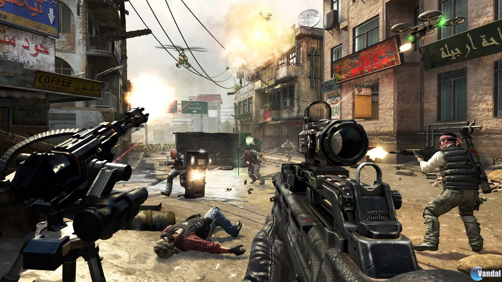

Los videojuegos de disparos o shooters son un género que engloban un amplio número de subgéneros que tienen la característica común de permitir controlar un personaje que, por norma general, dispone de un arma (mayoritariamente de fuego) que puede ser disparada a voluntad.
En 1974 apareció el que algunos consideran como el primer videojuego de este género: Maze War; además, fue también el primer videojuego multijugador (en red local), siendo así uno de los padres de los videojuegos de disparos en primera persona, junto con Spasim, del mismo año, que permitía batallas multijugador en línea de hasta 32 jugadores. En los años siguientes, con títulos como Driller (1987) u otros, aunque importantes, los videojuegos en primera persona no superaban a los clásicos videojuegos de plataformas o tercera persona, pero con la salida de Wolfenstein 3D en 1992, y Doom, en 1993, revivieron el mercado y popularizaron el género.
Shooters en primera persona: Los videojuegos de disparos en primera persona (también conocidos como FPS o first person shooters) se caracterizan por tener un estilo como el de los videojuegos Counter-Strike, Wolfenstein 3D, Blakestone: Aliens of gold, Halo, Doom, Quake, Half-Life, GoldenEye 007, Battlefield, Medal of Honor, TimeSplitters, Killzone, Titanfall, Red Steel y Call of Duty. En los que lo que aparece en pantalla simula la visión de los ojos del personaje controlado por el jugador. Shooters en tercera persona: Los videojuego de disparos en tercera persona tienen un estilo como los videojuegos de la saga Tomb Raider, Max Payne, Gears of War, Dark Sector, Red Dead Revolver, Splinter Cell, S4 League y Grand Theft Auto. Es un género en el cual el personaje es visto desde una perspectiva en tercera persona. Shoot ‘em up: Los shoot 'em ups son un subgénero muy específico de los shooters, donde el jugador tiene un control limitado sobre su movimiento: por ejemplo, un shooter 2D en el que la pantalla se mueve progresivamente hacia adelante, impidiendo al jugador retroceder, como Metal Slug.